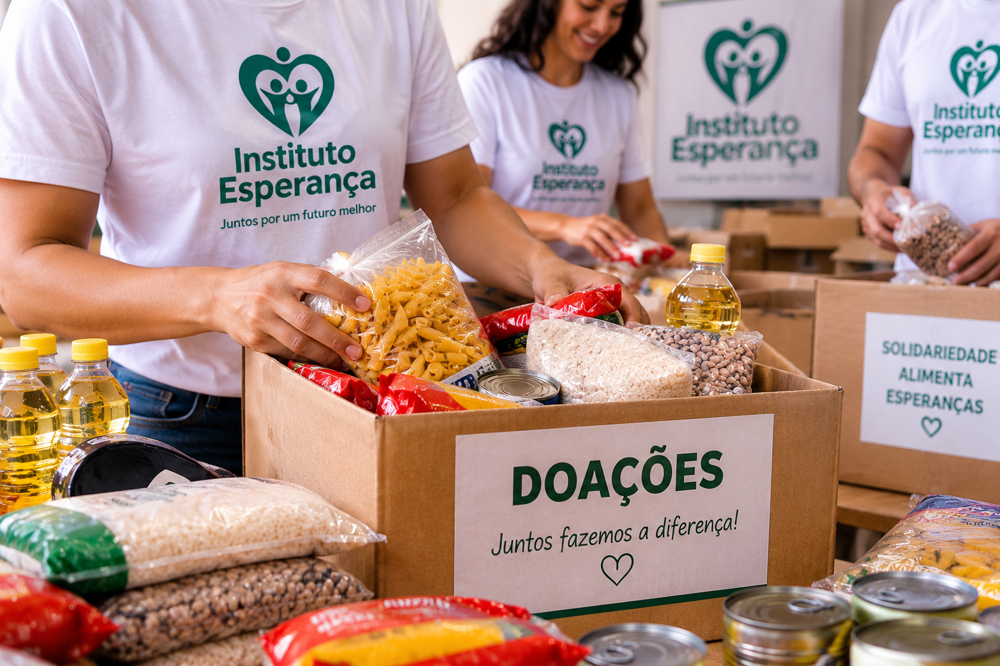
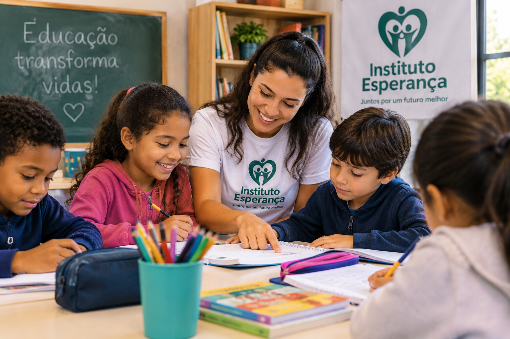
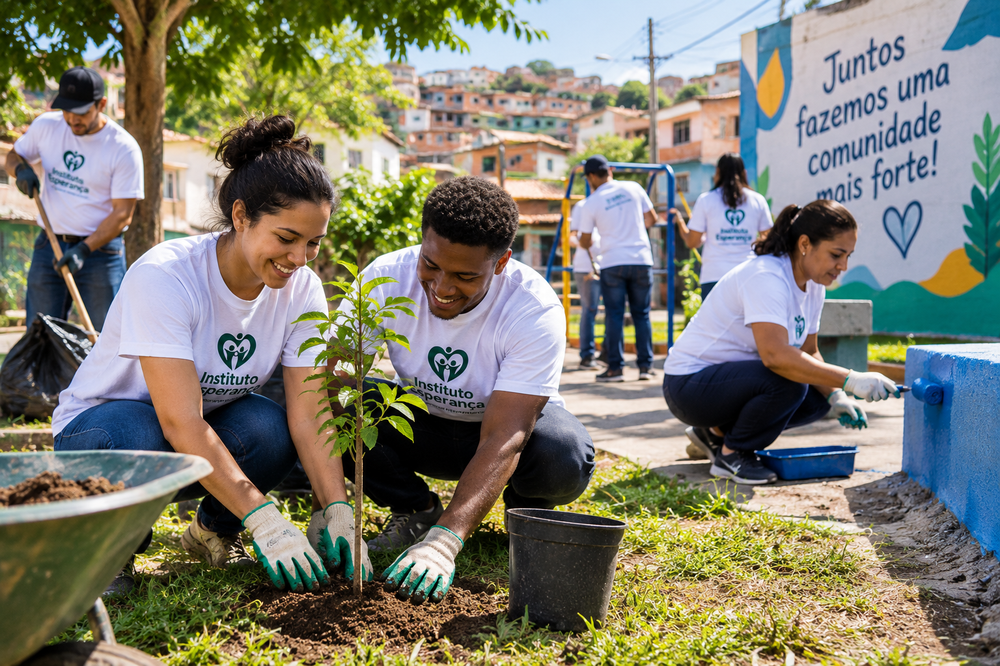

Campanha de Alimentos

Nossa campanha arrecada alimentos para famílias em situação de vulnerabilidade social.
Impacto: Mais de 500 famílias atendidas.
Conheça alguns dos projetos desenvolvidos pelo Instituto Esperança e descubra como você pode fazer parte dessas ações.

Nossa campanha arrecada alimentos para famílias em situação de vulnerabilidade social.
Impacto: Mais de 500 famílias atendidas.

O projeto oferece atividades educativas e apoio escolar para crianças e adolescentes.
Impacto: 120 estudantes beneficiados.

Realizamos ações comunitárias para melhorar espaços públicos e fortalecer a integração entre moradores.
Impacto: 10 comunidades.
Você pode contribuir com seu tempo, conhecimento e habilidades participando dos nossos projetos.
Para se cadastrar como voluntário, acesse nossa página de cadastro.
Quero ser voluntárioSua contribuição ajuda o Instituto Esperança a manter seus projetos e ampliar o número de pessoas atendidas.
Toda doação é importante e contribui para transformar vidas.
Quero Doar